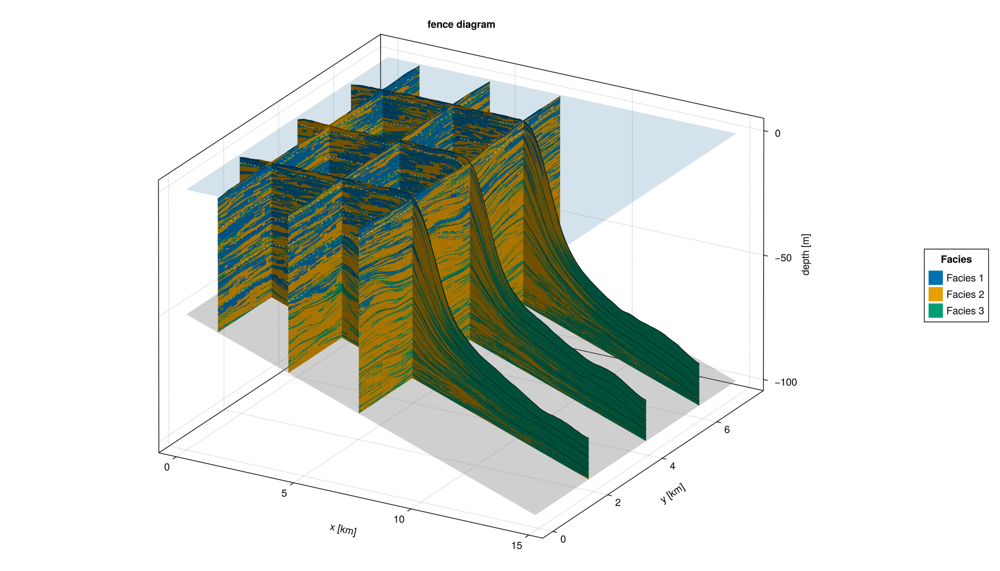
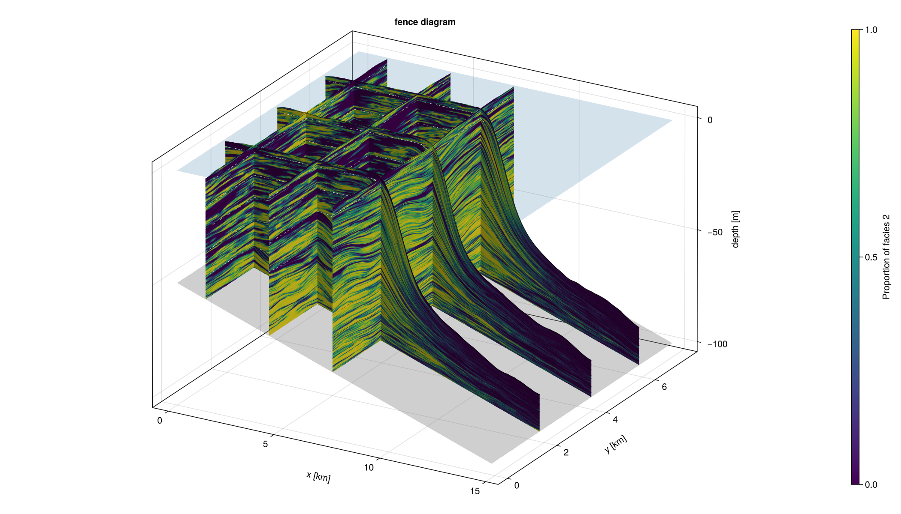
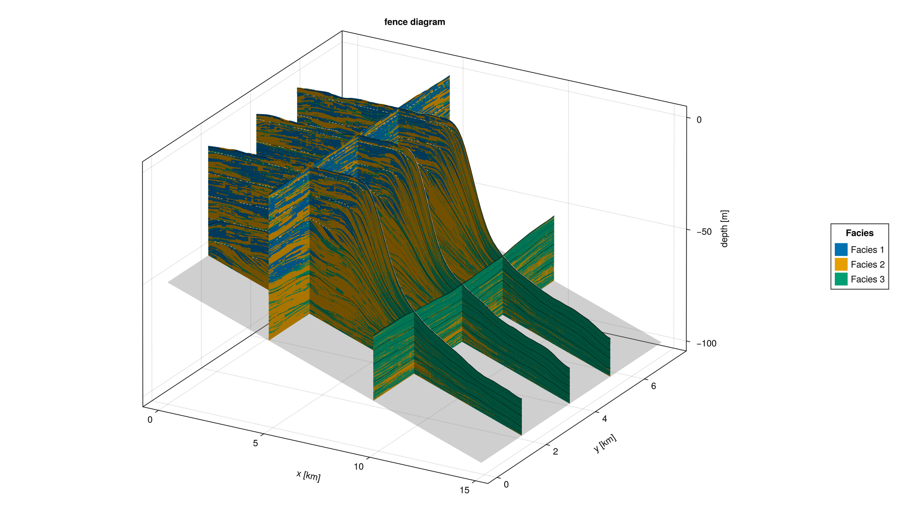

Fence Diagrams
The fence-diagram visualization generates multiple cross-sections through the model domain by specifying x and y slice positions. This provides an intuitive way to inspect 3D stratigraphic architecture and examine lateral and vertical variations in facies across the platform.


Examples
Example 1 reproduces the fence diagram above from alcap-example.h5 with categorical colouring. Each colour corresponds to one facies.
Example 2 reproduces the same diagram but colours fences by the proportion of a single selected facies, making it easier to visualise its spatial distribution and relative abundance.
Example 3 demonstrates the sequence form of fence_diagram!. Instead of passing a full DataVolume, an iterable of pre-selected DataSlice objects is passed directly. This form is useful for combining slices from multiple HDF5 files, plotting all profiles saved to a MemoryOutput, or selecting arbitrary subsets without loading the full volume.
Example 4 shows the all-slices HDF5 form: fence_diagram(filename) reads every DataSlice group in the file and plots them all without any manual group listing. A matching fence_diagram(output::MemoryOutput) form works the same way for in-memory results.
#| creates: docs/src/fig/fence_diagram_file_cat.png
#| docs/src/fig/fence_diagram_file_fraction.png
#| docs/src/fig/fence_diagram_slice_sequence.png
#| requires: data/output/alcap-example.h5
#| collect: figures
module Script
using Makie
using Unitful
using CarboKitten
using CarboKitten.Export: read_volume, read_slice
using CarboKitten.Visualization: fence_diagram, fence_diagram!
# -- Example 1: categorical colouring from HDF5 file -------------------------
function from_file_categorical()
fig = fence_diagram(
"data/output/alcap-example.h5", :topography;
x_slices = [10, 30, 50],
y_slices = [2.0u"km", 4.0u"km", 6.0u"km"],
show_unconformities = 10,
show_coeval_lines = true,
show_sealevel = true,
color_by = :facies)
save("docs/src/fig/fence_diagram_file_cat.png", fig)
end
# -- Example 2: proportional colouring from HDF5 file -------------------------
function from_file_fraction()
fig = fence_diagram(
"data/output/alcap-example.h5", :topography;
x_slices = [10, 30, 50],
y_slices = [2.0u"km", 4.0u"km", 6.0u"km"],
show_unconformities = 10,
show_coeval_lines = true,
show_sealevel = true,
color_by = :facies_fraction,
facies = 2,
colormap = :viridis)
save("docs/src/fig/fence_diagram_file_fraction.png", fig)
end
# -- Example 3: sequence of DataSlice -----------------------------------------
# Build the slice collection explicitly — any iterable works, including
# results from MemoryOutput or slices read from different files.
function from_slice_sequence()
header, vol = read_volume("data/output/alcap-example.h5", :topography)
nx, ny = header.grid_size
# Pick three dip sections and two strike sections
slices = [
vol[:, div(ny, 4)],
vol[:, div(ny, 2)],
vol[:, 3 * div(ny, 4)],
vol[div(nx, 3), :],
vol[2 * div(nx, 3), :],
]
fig = fence_diagram(header, slices;
color_by = :facies,
show_unconformities = true,
show_coeval_lines = true)
save("docs/src/fig/fence_diagram_slice_sequence.png", fig)
end
# -- Example 4: all slices from HDF5 file ------------------------------------
function from_all_slices()
fig = fence_diagram("data/output/alcap-example.h5";
color_by = :facies)
save("docs/src/fig/fence_diagram_all_slices.png", fig)
end
function main()
from_file_categorical()
from_file_fraction()
from_slice_sequence()
from_all_slices()
end
end
Script.main()
Implementation
The implementation is split into three layers:
fence_plot!— renders a singleDataSliceas a 3D mesh panel. Re-usesexplode_quad_verticesfromSedimentProfileand delegates height computation tosurface_heights(defined inOutput.Abstract).fence_diagram!(ax, header, slices)— core sequence method. Iterates over any collection ofDataSliceobjects. Bedrock and sea-level surfaces are produced fromheaderalone and are available here — noDataVolumerequired.fence_diagram!(ax, header, data::DataVolume)— convenience method. Convertsx_slices/y_slicesarguments intoDataSliceobjects, adds bedrock and sea-level context surfaces, then delegates to the core sequence method.
surface_heights
The height array for a slice (shape (n_pos, n_t+1)) used to be computed inside FenceDiagrams.jl. It now lives in Output.Abstract as surface_heights(header, data::Data{F,D}) and works generically for DataColumn, DataSlice, and DataVolume. It is also available to SedimentProfile.jl and any future visualization that needs the same quantity.
module FenceDiagram
import CarboKitten.Visualization: fence_diagram, fence_diagram!
using CarboKitten.Visualization
using CarboKitten.Utility: in_units_of
using CarboKitten.Export: Header, Data, DataSlice, DataVolume, read_volume,
read_data, group_datasets, read_header
using CarboKitten.Output.MemoryWriter: MemoryOutput
using CarboKitten.Algorithms: skeleton
using CarboKitten.Output.Abstract: stratigraphic_column, water_depth, surface_heights
import ..SedimentProfile: explode_quad_vertices
using Makie
using GeometryBasics
using Unitful
using HDF5
const Rate = typeof(1.0u"m/Myr")
const Amount = typeof(1.0u"m")
const Length = typeof(1.0u"m")
const Time = typeof(1.0u"Myr")
_to_index(axis::AbstractVector, idx::Integer) = Int(idx)
_to_index(axis::AbstractVector{<:Quantity}, pos::Quantity) =
argmin(abs.(axis .- pos))
function _facies_fraction(column, facies::Integer)
total = sum(column)
iszero(total) && return NaN
return column[facies] / total
end
function _slice_geometry(header::Header, data::DataSlice)
s = data.slice
if s[1] isa Colon && s[2] isa Integer
return :along_x, header.axes.x, header.axes.y[s[2]]
elseif s[1] isa Integer && s[2] isa Colon
return :along_y, header.axes.y, header.axes.x[s[1]]
else
error("fence_diagram: unsupported slice $(s); need (:, Int) or (Int, :)")
end
end
function fence_plot!(ax::Axis3, header::Header, data::DataSlice;
color::AbstractArray, mesh_args...)
_, n_pos, n_t = size(data.production)
orient, pos_axis, fixed_coord = _slice_geometry(header, data)
pos_km = pos_axis |> in_units_of(u"km")
fixed_km = fixed_coord |> in_units_of(u"km")
h_m = surface_heights(header, data) |> in_units_of(u"m")
verts = zeros(Float64, n_pos, n_t + 1, 3)
if orient === :along_x
@views verts[:, :, 1] .= pos_km
@views verts[:, :, 2] .= fixed_km
@views verts[:, :, 3] .= h_m
else
@views verts[:, :, 1] .= fixed_km
@views verts[:, :, 2] .= pos_km
@views verts[:, :, 3] .= h_m
end
v, f = explode_quad_vertices(verts)
c = reshape(color, n_pos * n_t)
return mesh!(ax, v, f; color=vcat(c, c), mesh_args...)
end
function fence_plot!(f::F, ax::Axis3, header::Header, data::DataSlice;
mesh_args...) where {F}
color = f.(eachslice(data.deposition, dims=(2, 3)))
return fence_plot!(ax, header, data; color=color, mesh_args...)
end
# Bedrock and sea-level only need the Header — initial_topography, subsidence_rate,
# sea_level and axes are all stored there. No DataVolume required.
function _plot_bedrock!(ax::Axis3, header::Header; alpha::Real=0.35)
x_km = header.axes.x |> in_units_of(u"km")
y_km = header.axes.y |> in_units_of(u"km")
total_subsidence = (header.axes.t[end] - header.axes.t[1]) * header.subsidence_rate
bedrock = (header.initial_topography .- total_subsidence) |> in_units_of(u"m")
surface!(ax, x_km, y_km, bedrock;
color=fill(0.5, size(bedrock)), colormap=:grays,
alpha=alpha, transparency=true, colorrange=(0.0, 1.0))
end
function _plot_sealevel!(ax::Axis3, header::Header; alpha::Real=0.2)
x_km = header.axes.x |> in_units_of(u"km")
y_km = header.axes.y |> in_units_of(u"km")
sea_level = header.sea_level[end] |> in_units_of(u"m")
z = fill(sea_level, length(x_km), length(y_km))
surface!(ax, x_km, y_km, z;
color=fill(0.7, size(z)), colormap=:Blues,
alpha=alpha, transparency=true, colorrange=(0.0, 1.0))
end
function _plot_fence_unconformities!(ax::Axis3, header::Header, data::DataSlice,
h_m::AbstractMatrix; minwidth::Int, kwargs...)
orient, pos_axis, fixed_coord = _slice_geometry(header, data)
pos_km = pos_axis |> in_units_of(u"km")
fixed_km = fixed_coord |> in_units_of(u"km")
hiatus = skeleton(water_depth(header, data) .< 0.0u"m"; minwidth=minwidth)
isempty(hiatus[1]) && return
verts = if orient === :along_x
[Point3f(pos_km[pt[1]], fixed_km, h_m[pt...]) for pt in hiatus[1]]
else
[Point3f(fixed_km, pos_km[pt[1]], h_m[pt...]) for pt in hiatus[1]]
end
linesegments!(ax, vec(permutedims(verts[hiatus[2]])); kwargs...)
end
function _plot_fence_coeval_lines!(ax::Axis3, header::Header, data::DataSlice,
h_m::AbstractMatrix, tics::Vector{Int}; kwargs...)
orient, pos_axis, fixed_coord = _slice_geometry(header, data)
pos_km = pos_axis |> in_units_of(u"km")
fixed_km = fixed_coord |> in_units_of(u"km")
n_pos = size(h_m, 1)
for t in tics
t = clamp(t, 1, size(h_m, 2))
if orient === :along_x
lines!(ax, pos_km, fill(fixed_km, n_pos), h_m[:, t]; kwargs...)
else
lines!(ax, fill(fixed_km, n_pos), pos_km, h_m[:, t]; kwargs...)
end
end
end
_apply_unconformities!(::Axis3, ::Header, ::DataSlice, _, ::Nothing) = nothing
_apply_unconformities!(ax::Axis3, h::Header, d::DataSlice, hm, flag::Bool) =
flag && _plot_fence_unconformities!(ax, h, d, hm;
minwidth=10, color=:white, linestyle=:dash, linewidth=1)
_apply_unconformities!(ax::Axis3, h::Header, d::DataSlice, hm, minwidth::Int) =
_plot_fence_unconformities!(ax, h, d, hm;
minwidth=minwidth, color=:white, linestyle=:dash, linewidth=1)
function _apply_coeval_lines!(ax::Axis3, header::Header, data::DataSlice,
h_m, n_tics::Tuple{Int,Int})
n_steps = div(header.time_steps, data.write_interval)
n_major, n_minor = n_tics
major = collect(div.(n_steps:n_steps:n_steps*n_major, n_major) .+ 1)
minor = filter(t -> !(t in major),
collect(div.(n_steps:n_steps:n_steps*n_minor, n_minor) .+ 1))
_plot_fence_coeval_lines!(ax, header, data, h_m, minor;
color=:black, linewidth=0.6, linestyle=:dot)
_plot_fence_coeval_lines!(ax, header, data, h_m, major;
color=:black, linewidth=0.8, linestyle=:solid)
end
_apply_coeval_lines!(ax::Axis3, h::Header, d::DataSlice, hm, flag::Bool) =
flag && _apply_coeval_lines!(ax, h, d, hm, (4, 8))
_apply_coeval_lines!(ax::Axis3, h::Header, d::DataSlice, hm, tics::Vector{Int}) =
_plot_fence_coeval_lines!(ax, h, d, hm, tics;
color=:black, linewidth=0.8, linestyle=:solid)
function _apply_coeval_lines!(ax::Axis3, header::Header, data::DataSlice,
h_m, tics::Vector{<:Time})
t_axis = header.axes.t[1:data.write_interval:end]
idx = Int[searchsortedfirst(t_axis, ti) for ti in tics]
_plot_fence_coeval_lines!(ax, header, data, h_m, idx;
color=:black, linewidth=0.8, linestyle=:solid)
end
"""
fence_diagram!(ax::Axis3, header::Header, slices; kwargs...)
Core fence-diagram renderer. `slices` is any iterable of `DataSlice` objects;
each slice is rendered as a vertical panel at its actual 3D position (inferred
from `data.slice`).
Bedrock and sea-level surfaces are produced from `header` alone — they do not
require a `DataVolume` — so this method produces a complete plot from just a
header and a sequence of slices. This makes it possible to plot slices read
from different HDF5 files, extracted from a `MemoryOutput`, or selected
arbitrarily from a volume.
Keyword arguments:
- `show_unconformities::Union{Nothing,Bool,Int}=true`
- `show_coeval_lines::Union{Bool,Tuple{Int,Int},Vector{Int},Vector{Time}}=false`
- `show_bedrock::Bool=true`
- `show_sealevel::Bool=false`
- `color_by::Symbol=:facies` — `:facies` or `:facies_fraction`
- `facies::Union{Nothing,Integer}=nothing` — required when `color_by=:facies_fraction`
- `colormap`, `alpha` — forwarded to `mesh!`
"""
function fence_diagram!(ax::Axis3, header::Header, slices;
show_unconformities::Union{Nothing,Bool,Int}=true,
show_coeval_lines::Union{Bool,Tuple{Int,Int},Vector{Int},Vector{<:Time}}=false,
show_bedrock::Bool=true,
show_sealevel::Bool=false,
color_by::Symbol=:facies,
facies::Union{Nothing,Integer}=nothing,
colormap=nothing,
alpha::Real=1.0,
mesh_args...)
show_bedrock && _plot_bedrock!(ax, header)
show_sealevel && _plot_sealevel!(ax, header)
plot_ref = nothing
color_function, cmap, colorrange = if color_by === :facies
(argmax, nothing, nothing)
elseif color_by === :facies_fraction
facies === nothing &&
error("fence_diagram!: `facies` must be specified when `color_by=:facies_fraction`.")
facies_idx = Int(facies)
(col -> _facies_fraction(col, facies_idx),
colormap === nothing ? :viridis : colormap,
(0.0, 1.0))
else
error("fence_diagram!: `color_by` must be :facies or :facies_fraction, got :$(color_by)")
end
for slice in slices
n_f = size(slice.production, 1)
resolved_cmap = if color_by === :facies
colormap === nothing ?
cgrad(Makie.wong_colors()[1:n_f], n_f, categorical=true) : colormap
else
cmap
end
resolved_range = color_by === :facies ? (1, n_f) : colorrange
p = fence_plot!(color_function, ax, header, slice;
colormap=resolved_cmap, colorrange=resolved_range,
alpha=alpha, mesh_args...)
plot_ref = something(plot_ref, p)
h_m = surface_heights(header, slice) |> in_units_of(u"m")
_apply_coeval_lines!(ax, header, slice, h_m, show_coeval_lines)
_apply_unconformities!(ax, header, slice, h_m, show_unconformities)
end
ax.xlabel = "x [km]"
ax.ylabel = "y [km]"
ax.zlabel = "depth [m]"
ax.title = "fence diagram"
return plot_ref
end
"""
fence_diagram!(ax::Axis3, header::Header, data::DataVolume; x_slices=[], y_slices=[], kwargs...)
Convenience method: generates `DataSlice` objects from `x_slices` and `y_slices`
and delegates entirely to the sequence method. All kwargs are forwarded.
"""
function fence_diagram!(ax::Axis3, header::Header, data::DataVolume;
x_slices::AbstractVector=Int[],
y_slices::AbstractVector=Int[],
kwargs...)
isempty(x_slices) && isempty(y_slices) &&
error("fence_diagram!: specify at least one slice via `x_slices` or `y_slices`.")
x_idx = Int[_to_index(header.axes.x, p) for p in x_slices]
y_idx = Int[_to_index(header.axes.y, p) for p in y_slices]
slices = Iterators.flatten((
(data[i, :] for i in x_idx),
(data[:, j] for j in y_idx),
))
return fence_diagram!(ax, header, slices; kwargs...)
end
function fence_diagram(header::Header, data;
size::Tuple{Int,Int}=(1400, 800),
azimuth::Real=-π/3,
elevation::Real=π/8,
color_by::Symbol=:facies,
facies::Union{Nothing,Integer}=nothing,
colormap=nothing,
kwargs...)
n_facies = Base.size(data isa DataVolume ? data.production :
first(data).production, 1)
fig = Figure(size=size)
ax = Axis3(fig[1, 1])
ax.azimuth = azimuth
ax.elevation = elevation
fence_diagram!(ax, header, data;
color_by=color_by, facies=facies, colormap=colormap, kwargs...)
if color_by === :facies
colors = Makie.wong_colors()[1:n_facies]
elements = [PolyElement(color=colors[i]) for i in 1:n_facies]
labels = ["Facies $(i)" for i in 1:n_facies]
Legend(fig[1, 2], elements, labels, "Facies")
elseif color_by === :facies_fraction
Colorbar(fig[1, 2];
colormap = colormap === nothing ? :viridis : colormap,
limits = (0, 1),
label = "Proportion of facies $(facies)")
end
return fig
end
function fence_diagram(filename::AbstractString,
group::Union{Symbol,AbstractString}; kwargs...)
header, data = read_volume(filename, group)
return fence_diagram(header, data; kwargs...)
end
"""
fence_diagram(filename; kwargs...)
Plot all `DataSlice` groups found in `filename` as a fence diagram.
"""
function fence_diagram(filename::AbstractString; kwargs...)
HDF5.h5open(filename, "r") do fid
header = read_header(fid)
groups = group_datasets(fid)
isempty(groups[:slice]) &&
error("fence_diagram: no DataSlice groups found in $(filename)")
slices = [read_data(Val{2}, fid[g]) for g in groups[:slice]]
return fence_diagram(header, slices; kwargs...)
end
end
"""
fence_diagram(output::MemoryOutput; kwargs...)
Plot all `DataSlice` datasets stored in a `MemoryOutput` as a fence diagram.
"""
function fence_diagram(output::MemoryOutput; kwargs...)
isempty(output.data_slices) &&
error("fence_diagram: MemoryOutput contains no DataSlice datasets")
return fence_diagram(output.header, values(output.data_slices); kwargs...)
end
end # module